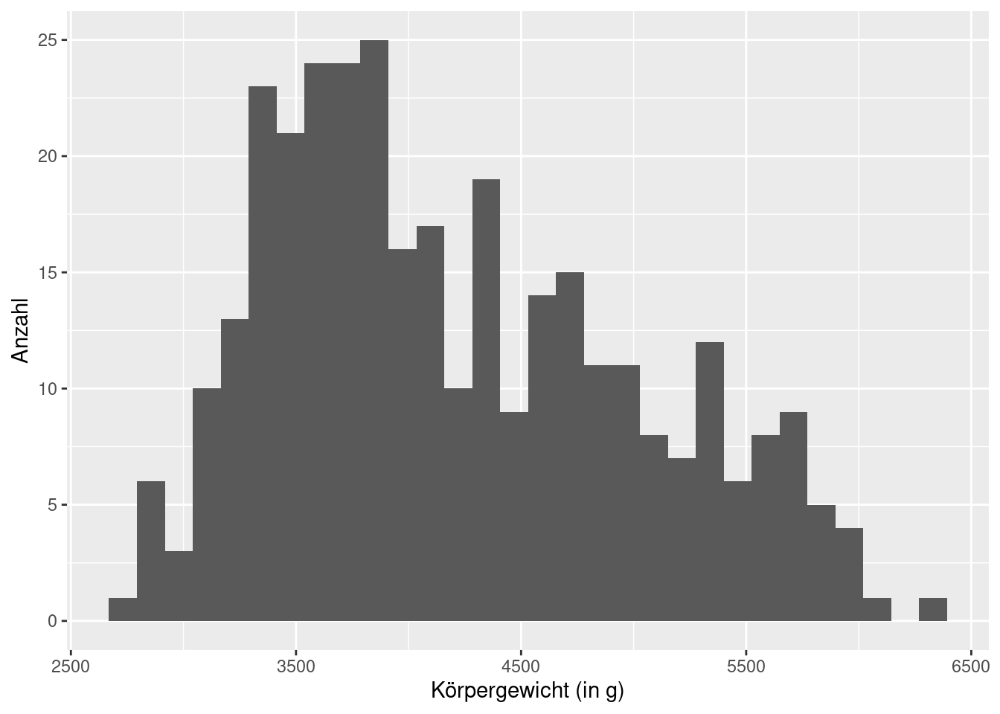

install.packages("tidyverse")
install.packages("palmerpenguins")Eine (sehr) kurze R Einführung
Installation
Benötigte Programme
Zunachst sollten wir die folgenden Dinge installieren.
Hilfe
Wie bei allen Programmiersprachen lässt sich viel über trial-and-error probieren und lösen. Alternativ gibt es eine riesige R Community und durch eine einfache Internetsuche der Fehlermeldung lassen sich viele Lösungen finden.
Zusätzliche Pakete
Wenn ihr die drei obigen Sachen installiert habt, so könnt ihr RStudio starten. Dort gebt ihr in den Console-Tab die folgenden Befehle ein.
Installierte Pakete laden
Lade nun zusätzliche R-Pakete, indem du die folgenden Befehle ausführst. Dies musst du jedes Mal tun, wenn du R startest. install.packages() musst du aber nicht nochmal ausführen.
library(tidyverse)
library(palmerpenguins)── Attaching packages ─────────────────────────────────────── tidyverse 1.3.2 ──
✔ ggplot2 3.3.6 ✔ purrr 0.3.5
✔ tibble 3.1.8 ✔ dplyr 1.0.10
✔ tidyr 1.2.1 ✔ stringr 1.4.1
✔ readr 2.1.3 ✔ forcats 0.5.2
── Conflicts ────────────────────────────────────────── tidyverse_conflicts() ──
✖ dplyr::filter() masks stats::filter()
✖ dplyr::lag() masks stats::lag()Alles ist ein Vektor
Sobald diese Befehle ausgeführt wurden, kannst du auf Datensätze aus diesen Paketen zugreifen. Dazu “führst” du den Namen aus. Dann erhältst du den folgenden Output.
penguins# A tibble: 344 × 8
species island bill_length_mm bill_depth_mm flipper_…¹ body_…² sex year
<fct> <fct> <dbl> <dbl> <int> <int> <fct> <int>
1 Adelie Torgersen 39.1 18.7 181 3750 male 2007
2 Adelie Torgersen 39.5 17.4 186 3800 fema… 2007
3 Adelie Torgersen 40.3 18 195 3250 fema… 2007
4 Adelie Torgersen NA NA NA NA <NA> 2007
5 Adelie Torgersen 36.7 19.3 193 3450 fema… 2007
6 Adelie Torgersen 39.3 20.6 190 3650 male 2007
7 Adelie Torgersen 38.9 17.8 181 3625 fema… 2007
8 Adelie Torgersen 39.2 19.6 195 4675 male 2007
9 Adelie Torgersen 34.1 18.1 193 3475 <NA> 2007
10 Adelie Torgersen 42 20.2 190 4250 <NA> 2007
# … with 334 more rows, and abbreviated variable names ¹flipper_length_mm,
# ²body_mass_gDu kannst auf einzelne Spalten mit $ zugreifen. Dann erhältst du einen Vektor. Diese sind in R enorm wichtig. Deswegen beschäftigen wir uns auch erstmal kurz mit diesem unsexy erscheinenden Thema. Aber nur kurz. Versprochen!
Gucken wir uns also mal zwei Vektoren aus dem Datensatz penguins an. Wir stellen dabei insbesondere fest, dass Vektoren in R nicht nur Zahlen enthalten müssen. Wir können bspw. auch Texte in einen Vektor drücken. Ein Vektor kann auch fehlende Werte enthalten. Diese werden mit NA gekennzeichnet.
penguins$bill_length_mm [1] 39.1 39.5 40.3 NA 36.7 39.3 38.9 39.2 34.1 42.0 37.8 37.8 41.1 38.6 34.6
[16] 36.6 38.7 42.5 34.4 46.0 37.8 37.7 35.9 38.2 38.8 35.3 40.6 40.5 37.9 40.5
[31] 39.5 37.2 39.5 40.9 36.4 39.2 38.8 42.2 37.6 39.8 36.5 40.8 36.0 44.1 37.0
[46] 39.6 41.1 37.5 36.0 42.3 39.6 40.1 35.0 42.0 34.5 41.4 39.0 40.6 36.5 37.6
[61] 35.7 41.3 37.6 41.1 36.4 41.6 35.5 41.1 35.9 41.8 33.5 39.7 39.6 45.8 35.5
[76] 42.8 40.9 37.2 36.2 42.1 34.6 42.9 36.7 35.1 37.3 41.3 36.3 36.9 38.3 38.9
[91] 35.7 41.1 34.0 39.6 36.2 40.8 38.1 40.3 33.1 43.2 35.0 41.0 37.7 37.8 37.9
[106] 39.7 38.6 38.2 38.1 43.2 38.1 45.6 39.7 42.2 39.6 42.7 38.6 37.3 35.7 41.1
[121] 36.2 37.7 40.2 41.4 35.2 40.6 38.8 41.5 39.0 44.1 38.5 43.1 36.8 37.5 38.1
[136] 41.1 35.6 40.2 37.0 39.7 40.2 40.6 32.1 40.7 37.3 39.0 39.2 36.6 36.0 37.8
[151] 36.0 41.5 46.1 50.0 48.7 50.0 47.6 46.5 45.4 46.7 43.3 46.8 40.9 49.0 45.5
[166] 48.4 45.8 49.3 42.0 49.2 46.2 48.7 50.2 45.1 46.5 46.3 42.9 46.1 44.5 47.8
[181] 48.2 50.0 47.3 42.8 45.1 59.6 49.1 48.4 42.6 44.4 44.0 48.7 42.7 49.6 45.3
[196] 49.6 50.5 43.6 45.5 50.5 44.9 45.2 46.6 48.5 45.1 50.1 46.5 45.0 43.8 45.5
[211] 43.2 50.4 45.3 46.2 45.7 54.3 45.8 49.8 46.2 49.5 43.5 50.7 47.7 46.4 48.2
[226] 46.5 46.4 48.6 47.5 51.1 45.2 45.2 49.1 52.5 47.4 50.0 44.9 50.8 43.4 51.3
[241] 47.5 52.1 47.5 52.2 45.5 49.5 44.5 50.8 49.4 46.9 48.4 51.1 48.5 55.9 47.2
[256] 49.1 47.3 46.8 41.7 53.4 43.3 48.1 50.5 49.8 43.5 51.5 46.2 55.1 44.5 48.8
[271] 47.2 NA 46.8 50.4 45.2 49.9 46.5 50.0 51.3 45.4 52.7 45.2 46.1 51.3 46.0
[286] 51.3 46.6 51.7 47.0 52.0 45.9 50.5 50.3 58.0 46.4 49.2 42.4 48.5 43.2 50.6
[301] 46.7 52.0 50.5 49.5 46.4 52.8 40.9 54.2 42.5 51.0 49.7 47.5 47.6 52.0 46.9
[316] 53.5 49.0 46.2 50.9 45.5 50.9 50.8 50.1 49.0 51.5 49.8 48.1 51.4 45.7 50.7
[331] 42.5 52.2 45.2 49.3 50.2 45.6 51.9 46.8 45.7 55.8 43.5 49.6 50.8 50.2penguins$species [1] Adelie Adelie Adelie Adelie Adelie Adelie Adelie
[8] Adelie Adelie Adelie Adelie Adelie Adelie Adelie
[15] Adelie Adelie Adelie Adelie Adelie Adelie Adelie
[22] Adelie Adelie Adelie Adelie Adelie Adelie Adelie
[29] Adelie Adelie Adelie Adelie Adelie Adelie Adelie
[36] Adelie Adelie Adelie Adelie Adelie Adelie Adelie
[43] Adelie Adelie Adelie Adelie Adelie Adelie Adelie
[50] Adelie Adelie Adelie Adelie Adelie Adelie Adelie
[57] Adelie Adelie Adelie Adelie Adelie Adelie Adelie
[64] Adelie Adelie Adelie Adelie Adelie Adelie Adelie
[71] Adelie Adelie Adelie Adelie Adelie Adelie Adelie
[78] Adelie Adelie Adelie Adelie Adelie Adelie Adelie
[85] Adelie Adelie Adelie Adelie Adelie Adelie Adelie
[92] Adelie Adelie Adelie Adelie Adelie Adelie Adelie
[99] Adelie Adelie Adelie Adelie Adelie Adelie Adelie
[106] Adelie Adelie Adelie Adelie Adelie Adelie Adelie
[113] Adelie Adelie Adelie Adelie Adelie Adelie Adelie
[120] Adelie Adelie Adelie Adelie Adelie Adelie Adelie
[127] Adelie Adelie Adelie Adelie Adelie Adelie Adelie
[134] Adelie Adelie Adelie Adelie Adelie Adelie Adelie
[141] Adelie Adelie Adelie Adelie Adelie Adelie Adelie
[148] Adelie Adelie Adelie Adelie Adelie Gentoo Gentoo
[155] Gentoo Gentoo Gentoo Gentoo Gentoo Gentoo Gentoo
[162] Gentoo Gentoo Gentoo Gentoo Gentoo Gentoo Gentoo
[169] Gentoo Gentoo Gentoo Gentoo Gentoo Gentoo Gentoo
[176] Gentoo Gentoo Gentoo Gentoo Gentoo Gentoo Gentoo
[183] Gentoo Gentoo Gentoo Gentoo Gentoo Gentoo Gentoo
[190] Gentoo Gentoo Gentoo Gentoo Gentoo Gentoo Gentoo
[197] Gentoo Gentoo Gentoo Gentoo Gentoo Gentoo Gentoo
[204] Gentoo Gentoo Gentoo Gentoo Gentoo Gentoo Gentoo
[211] Gentoo Gentoo Gentoo Gentoo Gentoo Gentoo Gentoo
[218] Gentoo Gentoo Gentoo Gentoo Gentoo Gentoo Gentoo
[225] Gentoo Gentoo Gentoo Gentoo Gentoo Gentoo Gentoo
[232] Gentoo Gentoo Gentoo Gentoo Gentoo Gentoo Gentoo
[239] Gentoo Gentoo Gentoo Gentoo Gentoo Gentoo Gentoo
[246] Gentoo Gentoo Gentoo Gentoo Gentoo Gentoo Gentoo
[253] Gentoo Gentoo Gentoo Gentoo Gentoo Gentoo Gentoo
[260] Gentoo Gentoo Gentoo Gentoo Gentoo Gentoo Gentoo
[267] Gentoo Gentoo Gentoo Gentoo Gentoo Gentoo Gentoo
[274] Gentoo Gentoo Gentoo Chinstrap Chinstrap Chinstrap Chinstrap
[281] Chinstrap Chinstrap Chinstrap Chinstrap Chinstrap Chinstrap Chinstrap
[288] Chinstrap Chinstrap Chinstrap Chinstrap Chinstrap Chinstrap Chinstrap
[295] Chinstrap Chinstrap Chinstrap Chinstrap Chinstrap Chinstrap Chinstrap
[302] Chinstrap Chinstrap Chinstrap Chinstrap Chinstrap Chinstrap Chinstrap
[309] Chinstrap Chinstrap Chinstrap Chinstrap Chinstrap Chinstrap Chinstrap
[316] Chinstrap Chinstrap Chinstrap Chinstrap Chinstrap Chinstrap Chinstrap
[323] Chinstrap Chinstrap Chinstrap Chinstrap Chinstrap Chinstrap Chinstrap
[330] Chinstrap Chinstrap Chinstrap Chinstrap Chinstrap Chinstrap Chinstrap
[337] Chinstrap Chinstrap Chinstrap Chinstrap Chinstrap Chinstrap Chinstrap
[344] Chinstrap
Levels: Adelie Chinstrap GentooDies hat nun eine Vektorausgabe erzeugt. Du siehst hier alle Einträge des Vektors. Diese nur zu sehen, ist in der Regel unpraktisch. Meistens wollen wir Vektoren weiterverarbeiten.
Am einfachsten geht das, wenn wir Vektoren in eine Variable abspeichern. Das sieht so aus. Das Zeichen <- kannst du mit Alt+- per Tastenkombination erzeugen.
penguin_bill_length <- penguins$bill_length_mmWir haben nun den vorhin ausgegebenen Vektor in eine Variable namens penguin_bill_length gespeichert. Wie du siehst, erzeugt dies keine Ausgabe, aber wir können die Daten jederzeit wieder abrufen. Rufe dazu einfach den Variablennamen auf.
penguin_bill_length[1:20] [1] 39.1 39.5 40.3 NA 36.7 39.3 38.9 39.2 34.1 42.0 37.8 37.8 41.1 38.6 34.6
[16] 36.6 38.7 42.5 34.4 46.0Hier habe ich den Variablennamen noch zusätzlich mit [1:20] versehen, um mir nur die Einträge 1 bis 20 des Vektors ausgeben zu lassen. Es verschwendet ja sonst viel zu viel Platz jedes Mal alle Einträge abzudrucken.
Dabei ist 1:20 Abkürzung für einen Vektor, der die natürlichen Zahlen von 1 bis 20 enthält.
1:20 [1] 1 2 3 4 5 6 7 8 9 10 11 12 13 14 15 16 17 18 19 20Somit können wir penguin_bill_length[1:20] von innen nach außen lesen.
1:20erstellt einen Vektor der Zahlen 1, 2, …, 20[ ]nimmt den vorherigen Vektor entgegenEs werden dann die Einträge von
penguin_bill_lengthan den Stellen 1 bis 20 ausgeben.
Auf die gleiche Art und Weise könnten wir auch beliebige Einträge des Vektors penguin_bill_length angucken. Dazu müssen wir nur einen Vektor erstellen, der die entsprechenden Indizes enthält. Das geht bspw. mit den Funktionen c() und seq().
c(1, 5, 7)[1] 1 5 7seq(from = 4, to = 10, by = 2)[1] 4 6 8 10Dann erhalten wir die entsprechenden Einträge von penguin_bill_length folgendermaßen
penguin_bill_length[c(1, 5, 7)][1] 39.1 36.7 38.9penguin_bill_length[seq(from = 4, to = 10, by = 2)][1] NA 39.3 39.2 42.0Wahrheitsvektoren
Im letzten Fall haben wir auch einen fehlenden Werte (NA) aus unserem Ursprungsvektor extrahiert. Die stören bei sämtlichen Rechnungen weswegen wir gerne diese NAs rausfiltern würden.
Dies funktioniert mit sogenannten Booleans, die ich auch gerne Wahrheitsvektoren nenne. Im Prinzip haben wir ja gesehen, dass wir in Vektoren nicht nur Zahlen sondern auch Texte speichern können. Dies geht auch mit den Wahrheitswerten TRUE oder FALSE.
c(TRUE, TRUE, FALSE, FALSE, FALSE)[1] TRUE TRUE FALSE FALSE FALSESolche Werte werden meistens durch Abfragen erstellt. Nehmen wir dazu mal den Vektor von vorhin und speichern ihn in eine Variable ab.
some_penguin_bill_lengths <- penguin_bill_length[seq(from = 4, to = 10, by = 2)]
some_penguin_bill_lengths[1] NA 39.3 39.2 42.0Abfragen lassen sich jetzt denkbar einfach erstellen. Wir schreiben einfach die Abfrage in die Konsole. Hier ein paar Beispiele
some_penguin_bill_lengths > 40
## [1] NA FALSE FALSE TRUE
some_penguin_bill_lengths <= 40
## [1] NA TRUE TRUE FALSE
# Hier zwei = Zeichen benutzen, da wir sonst eine Variable erstellen
some_penguin_bill_lengths == 39.2
## [1] NA FALSE TRUE FALSEIhr seht, dass dabei NAs bestehen bleiben und nicht zu TRUE oder FALSE werden. Das ist ein Grund warum NAs nervig sind. Sie laufen einem ständig hinterher und gehen nicht von alleine weg.
Normalerweise können wir Wahrheitsvektoren zur Indizierung von Vektoren benutzten. D.h. anstelle von Zahlen zum Extrahieren von Vektoreinträgen benutzen wir die TRUEs.
# Holt zweite und dritte Stelle aus dem
some_penguin_bill_lengths[c(FALSE, TRUE, TRUE, FALSE)][1] 39.3 39.2Enthält unser Wahrheitsvektor allerdings NAs, so laufen diese uns auch hier hinterher.
some_penguin_bill_lengths[some_penguin_bill_lengths > 40][1] NA 42Es wird also Zeit die nervigen NAs rauszufiltern. Ein wichtiger Helfer dabei ist die is.na() Funktion. Diese erkennt unsere NAs.
is.na(some_penguin_bill_lengths)[1] TRUE FALSE FALSE FALSEMit dem Umkehroperator ! können wir nun TRUE und FALSE invertieren.
!is.na(some_penguin_bill_lengths)[1] FALSE TRUE TRUE TRUEUnd diesen Vektor können wir nun als Indizierung nehmen, um den fehlenden Wert rauszufiltern.
some_penguin_bill_lengths[!is.na(some_penguin_bill_lengths)][1] 39.3 39.2 42.0Rechnen mit Vektoren
Vektoren sind nicht nur da, um sie anzugucken und auszugeben. Sie bilden auch unsere Standardrecheneinheit. Hier einige nützliche Befehle, die wir im Zusammenhang mit Vektoren gebrauchen können.
some_penguin_bill_lengths
## [1] NA 39.3 39.2 42.0
# Komponentenweise Addition (funktioniert auch mit - * /)
# NA bleiben NA
some_penguin_bill_lengths + 5
## [1] NA 44.3 44.2 47.0
some_penguin_bill_lengths + some_penguin_bill_lengths
## [1] NA 78.6 78.4 84.0
# Länge eines Vektors
length(some_penguin_bill_lengths)
## [1] 4
# Zahlenfolge von 1 bis zur Vektorlänge
seq_along(some_penguin_bill_lengths)
## [1] 1 2 3 4
# Minimum, Maximum, Durchschnitt
min(some_penguin_bill_lengths, na.rm = TRUE)
## [1] 39.2
max(some_penguin_bill_lengths, na.rm = TRUE)
## [1] 42
mean(some_penguin_bill_lengths, na.rm = TRUE)
## [1] 40.16667Man bemerke, dass wir das Argument na.rm = TRUE setzen mussten. Dies liegt daran, da wir durch den enthaltenen NA sonst auch immer NA als Ergebnis erhalten würden.
Datenvisualisierung
So nun haben wir erstmal genug mit Vektoren gerechnet. Kommen wir zu den spannenden Dingen im Leben. Lasst uns Bilder malen!1
Dazu rufen wir zunächst die Funktion ggplot() auf.
ggplot()
Dies ist unsere Leinwand auf die wir weitere Dinge zeichnen werden. Beispielsweise könnten wir mit unseren Penguindaten so ein Punktdiagramm zeichen.
Dazu gehen wir in den folgenden Schritten vor:
Punkteschicht mittels
geom_point()zur Leinwand “addieren”x- und y-Koordinaten der Punkte angeben. Dies geschieht durch den gewöhnungsbedürftigen Syntax
mapping = aes(x = ..., y = ...). Die...werden hierbei durch die entsprechenden Vektoren ersetzt. Wir haben ja gerade gelernt, wie wir diese auspenguinsextrahieren.Farbe und Größe der Punkte verändern:
size = 3undcolor = 'dodgerblue4'Punkte ein bisschen transparent machen:
alpha = 0.75Achsen beschriften mithilfe einer “addierten”
labs()-Schicht.
Input
ggplot() +
geom_point()Output

Input
ggplot() +
geom_point(
mapping = aes(
x = penguins$bill_length_mm,
y = penguins$flipper_length_mm
)
)Output
Warning: Removed 2 rows containing missing values (geom_point).Input
ggplot() +
geom_point(
mapping = aes(
x = penguins$bill_length_mm,
y = penguins$flipper_length_mm
),
color = 'dodgerblue4',
size = 3
)Output
Warning: Removed 2 rows containing missing values (geom_point).Input
ggplot() +
geom_point(
mapping = aes(
x = penguins$bill_length_mm,
y = penguins$flipper_length_mm
),
color = 'dodgerblue4',
size = 3,
alpha = 0.75
)Output
Warning: Removed 2 rows containing missing values (geom_point).
Input
ggplot() +
geom_point(
mapping = aes(
x = penguins$bill_length_mm,
y = penguins$flipper_length_mm
),
color = 'dodgerblue4',
size = 3,
alpha = 0.75
) +
labs(
x = 'Schnabellänge (in mm)',
y = 'Flossenlänge (in mm)'
)Output
Warning: Removed 2 rows containing missing values (geom_point).Super, wir haben jetzt also ein Grundgerüst, um eine Grafik zu erstellen. Wichtig ist mir dabei, dass du folgende Dinge mitgenommen hast:
Das sogennante
mappingbestimmt was auf unsere Leinwand gezeichnet wird. Ohnemappingbleibt unser Plot leer. Deswegen passiert in Schritt 1 noch nicht viel in unserem Bild.Immer wenn wir irgendwelche Texte angeben (wie bei der Farbe oder der Achsenbeschriftung), müssen wir Anführungszeichen verwenden. Es spielt dabei keine Rolle, ob wir
""oder''verwenden (solange wir am Anfang und Ende vom Text das gleiche Zeichen nehmen).Die daten- bzw. vektorabhängigen Teile unseres Plots werden durch das
mappingbestimmt. Dieses müssen wir durch eine Hilfsfunktionaes()angeben. Diesen Syntax müssen wir jetzt erstmal so akzeptieren.Die Teile unseres Plots, die unabhängig von unseren Daten sind (in diesem Fall Farbe, Größe und Transparenz der Punkte) wird innerhalb
geom_point(), aber außerhalb vommappingbzw.aes()gesetzt.Unser Datensatz enthält
NAs. Deswegen generiertggplot()jedes Mal eine Warnung, dass Beobachtungen entfernt wurden.
Machen wir nun unsere Grafik ein bisschen informativer. Die Punkte sollen nicht alle die gleiche Farbe haben. Es wäre vielleicht interessant zu sehen, ob es einen Unterschied zwischen Pinguinen unterschiedlicher Spezien hinsichtlich ihrer Schnabel- oder Flossenlänge gibt. Lasst uns also eine Grafik erstellen, die mehrere Farben verwendet. Dies könnte so aussehen.
Offensichlich gibt es hier klare Gruppierungen. Lasst uns diese Grafik nachbauen. Dazu müssen wir unser Grundgerüst von eben ein wenig anpassen.
Lösche die Farbzuweisung
color = "dodgerblue4"Weise dem color-mapping innerhalb von
aes()den Vektorpenguins$specieszu. Dies mag einem vielleicht zunächst merkwürdig vorkommen. Ich erkläre nachher was hier passiert.Ergänze die
labs()-Schicht, umcolor = "Spezies".
Input
ggplot() +
geom_point(
mapping = aes(
x = penguins$bill_length_mm,
y = penguins$flipper_length_mm
),
size = 3,
alpha = 0.75
) +
labs(
x = 'Schnabellänge (in mm)',
y = 'Flossenlänge (in mm)'
)Output
Warning: Removed 2 rows containing missing values (geom_point).Input
ggplot() +
geom_point(
mapping = aes(
x = penguins$bill_length_mm,
y = penguins$flipper_length_mm,
color = penguins$species
),
size = 3,
alpha = 0.75
) +
labs(
x = 'Schnabellänge (in mm)',
y = 'Flossenlänge (in mm)'
)Output
Warning: Removed 2 rows containing missing values (geom_point).Input
ggplot() +
geom_point(
mapping = aes(
x = penguins$bill_length_mm,
y = penguins$flipper_length_mm,
color = penguins$species
),
size = 3,
alpha = 0.75
) +
labs(
x = 'Schnabellänge (in mm)',
y = 'Flossenlänge (in mm)',
color = 'Spezies'
)Output
Warning: Removed 2 rows containing missing values (geom_point).Lasst uns nochmal über Schritt 2 reden. In diesem Schrit haben wir für color gar keine Farben angegeben. Schließlich enthält der Vektor penguins$species nur die Wörter Adelie, Gentoo und Chinstrap. Ich bin zwar kein Experte, aber das klingt nicht nach Farben.
Aber aes() erwartet auch gar keine Farben. Stattdessen sollen wir nur Daten angeben. Ihr erinnert euch? Datenabhängige Teile der Grafik kommen ins aes(). Und genau das haben wir gemacht.
Und woher kommen dann die Farben? Das ist das Werk von ggplot(). Es übernimmt die Farbzuweisung selbstständig. Dazu überprüft es, wie viele verschiedene Texte es in dem von uns angegebenen Vektor gibt (in diesem Fall ist der Vetkor penguins$species). Anschließend weist ggplot() jedem Text (in diesem Fall jeder Spezies) eine Farbe zu. Wir könnten theoretisch ggplot() auch noch genau vorgeben, welche Farbe es zu verwenden hat. Aber das wäre jetzt zu viel des Guten.
Abschließend lasst uns unseren Code noch einmal vereinfachen. Ihr habt vielleicht schon festgestellt, dass wir ständig penguins$ in unserem Code geschrieben haben. Das kann schnell mühselig werden. Wir können in geom_point() aber einfach data = penguins setzen. Dann weiß ggplot(), dass es die entsprechenden Vektoren finden kann, indem es selbst penguins$ vor unsere Angaben setzt. Das ganze sieht dann so aus.
ggplot() +
geom_point(
data = penguins,
mapping = aes(
x = bill_length_mm,
y = flipper_length_mm,
color = species
),
size = 3,
alpha = 0.75
) +
labs(
x = 'Schnabellänge (in mm)',
y = 'Flossenlänge (in mm)',
color = 'Spezies'
)Warning: Removed 2 rows containing missing values (geom_point).
Berechnete Größen visualisieren
Lasst uns nun unsere Penguine zählen. Schauen wir dazu doch noch einmal in unseren Datensatz.
penguins# A tibble: 344 × 8
species island bill_length_mm bill_depth_mm flipper_…¹ body_…² sex year
<fct> <fct> <dbl> <dbl> <int> <int> <fct> <int>
1 Adelie Torgersen 39.1 18.7 181 3750 male 2007
2 Adelie Torgersen 39.5 17.4 186 3800 fema… 2007
3 Adelie Torgersen 40.3 18 195 3250 fema… 2007
4 Adelie Torgersen NA NA NA NA <NA> 2007
5 Adelie Torgersen 36.7 19.3 193 3450 fema… 2007
6 Adelie Torgersen 39.3 20.6 190 3650 male 2007
7 Adelie Torgersen 38.9 17.8 181 3625 fema… 2007
8 Adelie Torgersen 39.2 19.6 195 4675 male 2007
9 Adelie Torgersen 34.1 18.1 193 3475 <NA> 2007
10 Adelie Torgersen 42 20.2 190 4250 <NA> 2007
# … with 334 more rows, and abbreviated variable names ¹flipper_length_mm,
# ²body_mass_gIn der Spalte island sehen wir, auf welcher Insel die Penguine leben. Wir könnten ja mal gucken, wie viele Penguine auf den verschiedenen Inseln leben. Dies könnte so aussehen.
Wenn wir hier ähnlich wie bei den Punktdiagrammen vorgehen wollen, stellen wir ziemlich schnell zwei Dinge fest:
Wir haben noch gar keinen blassen Schimmer wie man solche Balken zeichnet. Bisher haben wir ja nur Punkte gezeichnet.
In unserem
mapping = aes(x = ..., y = ...)wäre nur dery-Teil klar. Schließlich istislandin unserem Datensatz vorhanden. Aber die Anzahl steht in keiner Spalte unseres Datensatzes.
Beide Probleme lassen sich mit geom_bar() lösen. Diese Funktion benötigt, jeweils nur ein mapping (x oder y) und zählt dann den Rest selbst. Die obige Grafik wird also durch den folgenden Code erzeugt.
ggplot() +
geom_bar(
data = penguins,
mapping = aes(y = island),
fill = 'dodgerblue4'
) +
labs(
x = 'Anzahl der Penguine',
y = 'Insel'
)Beachte, dass wir hier fill statt color verwendet haben. Dies liegt daran, dass bei Balkendiagrammen color die Umrandung beinflusst und fill das Innere des Balken.
Analog zu dem Punktdiagramm könnten wir auch jede Spezies einzeln zählen. Dazu mappen wir fill = species.
ggplot() +
geom_bar(
data = penguins,
mapping = aes(y = island, fill = species),
width = 0.5 # Macht die Balken bisschen schmaller
) +
labs(
x = 'Anzahl der Penguine',
y = 'Insel'
)Wir sehen also, dass ggplot auch in der Lage ist, Berechnungen für uns durchzuführen, bevor die Leinwand bemalt wird. Eine andere Möglichkeit, um ggplot rechnen zu lassen, sind Histogramme. Beispielsweise ist hier ein Histogramm für das Gewicht der Penguine.
penguins |>
filter(!is.na(sex)) |>
ggplot(aes(x = body_mass_g)) +
geom_histogram() +
labs(x = 'Körpergewicht (in g)', y = 'Anzahl')`stat_bin()` using `bins = 30`. Pick better value with `binwidth`.
Bei einem Histogramm wird das Intervall von der kleinsten bis zur größten beobachteten Größe in gleichgroße Teile geteilt. Anschließend wird gezählt, wie oft Beobachtungen in diese Teilbereiche fallen. In diesem Fall wurde das Gewicht von 2700 bis 6300 in 30 Teile aufgeteilt. Dies seht ihr an der bins = 30 Mitteilung. Ihr könnt ja mal versuchen, diese Größe zu verändern.
Eigene Berechnungen anstellen
Natürlich können wir auch selber neue Variablen mit unserem Datensatz penguins berechnen. Fangen wir doch mal einfach an und zählen die Penguine so wie in Abbildung 1 und Abbildung 2.
Zusammenfassungen mit summarise()
Zählen ist eine der einfachsten Zusammenfassungen eines Datensatzes. Allgemein benötigen wir für Zusammenfassungen die summarise() Funktion. Diese nimmt als erstes Argument einen Datensatz (so wie penguins) und danach sogenannte name-value pairs. Schauen wir uns das mal in Action an.
summarise(
penguins,
min_body_mass = min(body_mass_g, na.rm = TRUE),
mean_flipper_length = mean(flipper_length_mm, na.rm = TRUE)
)# A tibble: 1 × 2
min_body_mass mean_flipper_length
<int> <dbl>
1 2700 201.Ein name-value pair ist also nichts anders als ein Name (surprise) und eine Berechnungsvorschrift. Der Output ist eine neue Tabelle, die unsere zwei selbstbenannten Spalten min_body_mass und mean_flipper_length enthält.
summarise() macht also im Wesentlichen das gleiche, was wir im Abschnitt “Rechnen mit Vektoren” gemacht haben. Hier müssen wir allerdings nicht jedes mal penguins$ eingeben. Indiesem Fall haben wir uns also folgendes gespart.
min(penguins$body_mass_g, na.rm = TRUE)
## [1] 2700
mean(penguins$flipper_length_mm, na.rm = TRUE)
## [1] 200.9152Stattdessen müssen wir nur einmal in summarise() unseren Datensatz angeben. Außerdem wird unser Ergebnis als Tabelle ausgeben (anstatt als Vektor).
Nun können wir summarise() zusammen mit der n() Funktion benutzen, um unsere Pinguine zu zählen. Diese Funktion erwartet allerdings keine Argumente sondern gibt einfach die aktuelle Gruppengröße zurück. Bei einer normalen Tabelle wie penguins ist das einfach die Anzahl der Zeilen.
summarise(penguins, Anzahl = n())# A tibble: 1 × 1
Anzahl
<int>
1 344Damit uns n() jetzt also weiterhilft, benötigen wir noch eine letztes Werkzeug. Nämlich group_by(). Diese Funktion kann unsere Tabelle penguins gruppieren, sodass summarise() zusammen mit n() auch so zählt, wie wir das wollen. Schauen wir uns das mal an.
summarise(
group_by(penguins, island),
Anzahl = n()
)# A tibble: 3 × 2
island Anzahl
<fct> <int>
1 Biscoe 168
2 Dream 124
3 Torgersen 52Dieser Code ist bisschen geschachtelt. Deswegen muss man ihn von innen nach außen lesen.
penguinswird mittelsgroup_by()anhand der Spalteislandgruppiert.Anschließend wird für jede Gruppe die Gruppengröße mit
n()ermittelt und durchsummarise()in eine neue Tabelle geschrieben.
Machen wir das Ganze nochmal so wie in Abbildung 2. Dazu gruppieren wir nach island und species.
summarise(
group_by(penguins, island, species),
Anzahl = n(),
)`summarise()` has grouped output by 'island'. You can override using the
`.groups` argument.# A tibble: 5 × 3
# Groups: island [3]
island species Anzahl
<fct> <fct> <int>
1 Biscoe Adelie 44
2 Biscoe Gentoo 124
3 Dream Adelie 56
4 Dream Chinstrap 68
5 Torgersen Adelie 52Das sind jetzt also die Zahlen, die in Abbildung 2 berechnet und gezeichnet wurden. Außerdem stellen wir fest, dass unsere Ausgabe nun eine gruppierte Tabelle ist (gekennzeichnet durch island [3]). Dies ist passiert, weil wir davor anhand von zwei Variablen gruppiert haben und summarise() immer nur eine und nicht mehrere Gruppierungen “auflöst”.
Wir haben jetzt ja schon gesehen, dass gruppierte Tabellen sich anders als normale Tabellen verhalten. Dies kann manchmal ungewünschte Effekt haben. Deswegen erhalten wir auch eine Warnung, dass noch eine Gruppierung vorliegt. Lasst uns die Gruppierung also lieber komplett auflösen. Dazu setzen wir .groups = "drop".
summarise(
group_by(penguins, island, species),
Anzahl = n(),
.groups = 'drop'
)# A tibble: 5 × 3
island species Anzahl
<fct> <fct> <int>
1 Biscoe Adelie 44
2 Biscoe Gentoo 124
3 Dream Adelie 56
4 Dream Chinstrap 68
5 Torgersen Adelie 52Filtern mit filter()
Wir stellen immer wieder fest, dass fehlende Werte (NAs) nervig sind. Beispielsweise haben wir auch im letzten Abschnitt immer wieder na.rm = TRUE setzen müssen. Ihr erinnert euch hoffentlich noch an den Teil hier:
summarise(
penguins,
min_body_mass = min(body_mass_g, na.rm = TRUE),
mean_flipper_length = mean(flipper_length_mm, na.rm = TRUE)
)Es wäre doch praktisch, wenn wir einfach die Beobachtungen mit NA s aussortieren könnten. Wir haben ja bereits gesehen, dass wir das mit Vektoren können:
some_penguin_bill_lengths <- penguins$bill_length_mm[seq(from = 4, to = 10, by = 2)]
some_penguin_bill_lengths
## [1] NA 39.3 39.2 42.0
some_penguin_bill_lengths[!is.na(some_penguin_bill_lengths)]
## [1] 39.3 39.2 42.0Das gleiche geht mit unserer Tabelle auch. Dazu können wir die filter() Funktion benutzen. Diese Funktion benötigt als erstes Argument eine Tabelle (penguins in unserem Fall) und anschließend Filterbedingungen. Solche Filterbedingungen funktionieren genauso wie für Vektoren (siehe Abschnitt “Wahrheitsvektoren”).
filter(penguins, body_mass_g > 3500)# A tibble: 264 × 8
species island bill_length_mm bill_depth_mm flipper_…¹ body_…² sex year
<fct> <fct> <dbl> <dbl> <int> <int> <fct> <int>
1 Adelie Torgersen 39.1 18.7 181 3750 male 2007
2 Adelie Torgersen 39.5 17.4 186 3800 fema… 2007
3 Adelie Torgersen 39.3 20.6 190 3650 male 2007
4 Adelie Torgersen 38.9 17.8 181 3625 fema… 2007
5 Adelie Torgersen 39.2 19.6 195 4675 male 2007
6 Adelie Torgersen 42 20.2 190 4250 <NA> 2007
7 Adelie Torgersen 37.8 17.3 180 3700 <NA> 2007
8 Adelie Torgersen 38.6 21.2 191 3800 male 2007
9 Adelie Torgersen 34.6 21.1 198 4400 male 2007
10 Adelie Torgersen 36.6 17.8 185 3700 fema… 2007
# … with 254 more rows, and abbreviated variable names ¹flipper_length_mm,
# ²body_mass_gfilter(penguins, species == "Gentoo")# A tibble: 124 × 8
species island bill_length_mm bill_depth_mm flipper_len…¹ body_…² sex year
<fct> <fct> <dbl> <dbl> <int> <int> <fct> <int>
1 Gentoo Biscoe 46.1 13.2 211 4500 fema… 2007
2 Gentoo Biscoe 50 16.3 230 5700 male 2007
3 Gentoo Biscoe 48.7 14.1 210 4450 fema… 2007
4 Gentoo Biscoe 50 15.2 218 5700 male 2007
5 Gentoo Biscoe 47.6 14.5 215 5400 male 2007
6 Gentoo Biscoe 46.5 13.5 210 4550 fema… 2007
7 Gentoo Biscoe 45.4 14.6 211 4800 fema… 2007
8 Gentoo Biscoe 46.7 15.3 219 5200 male 2007
9 Gentoo Biscoe 43.3 13.4 209 4400 fema… 2007
10 Gentoo Biscoe 46.8 15.4 215 5150 male 2007
# … with 114 more rows, and abbreviated variable names ¹flipper_length_mm,
# ²body_mass_gfilter(penguins, !is.na(sex))# A tibble: 333 × 8
species island bill_length_mm bill_depth_mm flipper_…¹ body_…² sex year
<fct> <fct> <dbl> <dbl> <int> <int> <fct> <int>
1 Adelie Torgersen 39.1 18.7 181 3750 male 2007
2 Adelie Torgersen 39.5 17.4 186 3800 fema… 2007
3 Adelie Torgersen 40.3 18 195 3250 fema… 2007
4 Adelie Torgersen 36.7 19.3 193 3450 fema… 2007
5 Adelie Torgersen 39.3 20.6 190 3650 male 2007
6 Adelie Torgersen 38.9 17.8 181 3625 fema… 2007
7 Adelie Torgersen 39.2 19.6 195 4675 male 2007
8 Adelie Torgersen 41.1 17.6 182 3200 fema… 2007
9 Adelie Torgersen 38.6 21.2 191 3800 male 2007
10 Adelie Torgersen 34.6 21.1 198 4400 male 2007
# … with 323 more rows, and abbreviated variable names ¹flipper_length_mm,
# ²body_mass_gAuch hier wurden Vektoren benutzt wie wir es im Abschnitt “Wahrheitsvektoren” gelernt haben. Spielen wir das Ganze mal für unser erstes Beispiel durch. Hier passiert folgendes.
Es wird
penguins$body_mass_g > 3500(einTRUE/FALSE-Vektor) berechnetAnschließend werden nur die Zeilen im Datensatz verwendet, für die der vorherige Vektor
TRUEgeliefert hat.
Jetzt könnten wir also unsere summarise()-Berechnung von vorhin ohne das na.rm = TRUE durchführen.
summarise(
filter(penguins, !is.na(sex)),
min_body_mass = min(body_mass_g),
mean_flipper_length = mean(flipper_length_mm)
)# A tibble: 1 × 2
min_body_mass mean_flipper_length
<int> <dbl>
1 2700 201.Vermeiden von Code-Schachtelungen
Wir könnten das auch für jede Insel und jede Spezies separat machen. Dafür haben wir ja gerade eben group_by() kennengelernt. Wir müssten also
- filtern mit
filter(), - gruppieren mit
group_by(), - zusammenfassen mit
summarise().
Der entsprechende Code könnte so aussehen.
summarise(
group_by(filter(penguins, !is.na(sex)), species, island),
min_body_mass = min(body_mass_g),
mean_flipper_length = mean(flipper_length_mm),
.groups = "drop"
)# A tibble: 5 × 4
species island min_body_mass mean_flipper_length
<fct> <fct> <int> <dbl>
1 Adelie Biscoe 2850 189.
2 Adelie Dream 2900 190.
3 Adelie Torgersen 2900 192.
4 Chinstrap Dream 2700 196.
5 Gentoo Biscoe 3950 217.Vielleicht findest du diesen Code ziemlich verwirrend und unübersichtlich. Ich würde dir da zustimmen. Für mich persönlich ist da viel zu viel geschachtelteter Code. Es wäre schön, wenn man den Code, wie in meiner vorherigen Aufzählung schreiben könnte.
Und tatsächlich kann man das. Dazu kann man die sogenannte Pipe |> verwenden. Sie nimmt den Output einer vorherigen Funktion und schickt sie an die erste Stelle der nachfolgenden Funktion.
Dies funktioniert für die hier verwendeten Funktionen super, denn
- jede dieser Funktionen erwartet an erster Stelle eine Tabelle
- jede dieser Funktionen gibt eine Tabelle aus
So sieht dann der gleiche code “gepiped” aus.
penguins |>
filter(!is.na(sex)) |>
group_by(species, island) |>
summarise(
min_body_mass = min(body_mass_g),
mean_flipper_length = mean(flipper_length_mm),
.groups = "drop"
)# A tibble: 5 × 4
species island min_body_mass mean_flipper_length
<fct> <fct> <int> <dbl>
1 Adelie Biscoe 2850 189.
2 Adelie Dream 2900 190.
3 Adelie Torgersen 2900 192.
4 Chinstrap Dream 2700 196.
5 Gentoo Biscoe 3950 217.Ihr müsst die Pipe auch nicht händisch tippen. Mit der Kombination strg + shift + M wirft RStudio die Pipe für euch. Bei euch könnte die Pipe allerdings dann wie %>% aussehen. Das ist die “alte” Pipe. Ihr könnt in RStudio unter Tools > Global Options > Code > Use native pipe operator die “neue” Pipe verwenden.
Auswählen von Spalten mit select()
Für gewöhnlich will man nur einen Teil der Spalten eines Datensatzes angucken. Mit der select()-Funktion kann man sich leicht auf die relevanten Spalten beschränken. Auch die select()-Funktion erwartet an erster Stelle eine Tabelle und ist daher sehr “pipe-freundlich”.
penguins |>
select(sex, flipper_length_mm, bill_length_mm, body_mass_g)# A tibble: 344 × 4
sex flipper_length_mm bill_length_mm body_mass_g
<fct> <int> <dbl> <int>
1 male 181 39.1 3750
2 female 186 39.5 3800
3 female 195 40.3 3250
4 <NA> NA NA NA
5 female 193 36.7 3450
6 male 190 39.3 3650
7 female 181 38.9 3625
8 male 195 39.2 4675
9 <NA> 193 34.1 3475
10 <NA> 190 42 4250
# … with 334 more rowsWie wir nun wissen, können wir diese Tabelle auch gleich um die fehlenden Werte bereinigen. Am besten speichern wir diese Tabelle auch in eine Variable ab. Dann können wir mit dieser neuen Tabelle in anderen Berechnungen weiterarbeiten.
selected_penguins <- penguins |>
select(sex, flipper_length_mm, bill_length_mm, body_mass_g) |>
filter(!is.na(sex))
selected_penguins# A tibble: 333 × 4
sex flipper_length_mm bill_length_mm body_mass_g
<fct> <int> <dbl> <int>
1 male 181 39.1 3750
2 female 186 39.5 3800
3 female 195 40.3 3250
4 female 193 36.7 3450
5 male 190 39.3 3650
6 female 181 38.9 3625
7 male 195 39.2 4675
8 female 182 41.1 3200
9 male 191 38.6 3800
10 male 198 34.6 4400
# … with 323 more rowsNeue Spalten mit mutate()
Eine alte “Weisheit”2 besagt “Wie die Nase eines Mannes, so sein…”. In Anlehnung an diese Aussage, lasst uns doch mal für unsere Penguine Schnabel- und Flossenlänge ins Verhältnis setzen. Mit Vektoren geht das kinderleicht:
selected_penguins$flipper_length_mm / selected_penguins$bill_length_mm [1] 4.629156 4.708861 4.838710 5.258856 4.834606 4.652956 4.974490 4.428224
[9] 4.948187 5.722543 5.054645 5.038760 4.635294 5.348837 4.217391 4.603175
[17] 4.774536 5.264624 4.842932 4.639175 5.297450 4.507389 4.617284 4.538259
[25] 4.444444 4.506329 4.784946 4.759494 4.498778 5.357143 5.000000 4.896907
[33] 4.265403 4.813830 4.623116 4.986301 4.779412 5.166667 4.444444 5.000000
[41] 4.797980 4.428224 5.277778 4.515366 4.696970 4.688279 5.428571 4.761905
[49] 5.420290 4.613527 4.769231 4.753695 4.958904 5.159574 5.182073 4.721550
[57] 4.920213 4.671533 5.054945 4.615385 5.492958 4.574209 5.292479 4.736842
[65] 5.671642 4.785894 4.949495 4.301310 5.352113 4.556075 4.669927 4.946237
[73] 5.165746 4.631829 5.462428 4.568765 5.095368 5.498575 5.120643 4.697337
[81] 5.234160 5.121951 4.934726 4.884319 5.658263 4.987835 5.441176 4.696970
[89] 5.165746 5.098039 4.986877 4.863524 5.377644 4.444444 5.485714 4.951220
[97] 4.854111 5.026455 5.092348 4.634761 5.155440 4.973822 4.750656 4.560185
[105] 5.196850 4.188596 4.861461 4.668246 4.823232 4.590164 4.870466 5.335121
[113] 5.294118 4.598540 5.165746 5.251989 4.378109 4.879227 5.284091 4.901478
[121] 4.922680 4.698795 4.897436 4.761905 4.935065 4.570766 5.244565 5.306667
[129] 4.908136 4.622871 5.365169 4.975124 5.000000 4.861461 4.800995 4.605911
[137] 5.856698 4.668305 5.147453 4.743590 4.846939 5.027322 5.416667 5.105820
[145] 5.194444 4.843373 4.577007 4.600000 4.312115 4.360000 4.516807 4.516129
[153] 4.647577 4.689507 4.826790 4.594017 5.232274 4.408163 4.703297 4.400826
[161] 4.585153 4.401623 5.000000 4.491870 4.523810 4.558522 4.342629 4.767184
[169] 4.580645 4.643629 5.011655 4.663774 4.497908 4.356846 4.400000 4.693446
[177] 4.883178 4.589800 3.859060 4.480652 4.545455 5.000000 4.932432 4.727273
[185] 4.271047 4.871194 4.536290 4.635762 4.354839 4.396040 4.977064 4.615385
[193] 4.455446 4.743875 4.756637 4.506438 4.536082 4.656319 4.491018 4.666667
[201] 4.888889 4.748858 4.835165 4.814815 4.444444 4.591611 4.783550 4.682713
[209] 4.254144 4.781659 4.618474 4.626263 5.057471 4.398422 4.528302 4.762931
[217] 4.585062 4.666667 4.655172 4.732510 4.400000 4.305284 4.756637 4.933628
[225] 4.317719 4.209524 4.472574 4.480000 4.721604 4.488189 5.023041 4.249513
[233] 4.463158 4.414587 4.589474 4.367816 4.659341 4.525253 4.808989 4.448819
[241] 4.372470 4.733475 4.194215 4.403131 4.515464 4.078712 4.555085 4.643585
[249] 4.594017 5.035971 4.101124 4.803695 4.345114 4.277228 4.598394 4.896552
[257] 4.466019 4.696970 4.174229 4.549180 4.533898 4.594017 4.404762 4.690265
[265] 4.268537 4.129032 3.920000 3.762183 4.140969 3.738140 4.380531 3.861171
[273] 3.840156 4.239130 3.859649 4.141631 3.752418 3.936170 3.865385 4.139434
[281] 3.980198 3.916501 3.120690 4.094828 3.963415 4.268868 3.938144 4.328704
[289] 3.814229 4.175589 3.788462 3.960396 4.040404 4.116379 3.882576 4.572127
[297] 3.708487 4.400000 3.980392 3.923541 4.189474 4.096639 4.038462 4.093817
[305] 3.831776 4.285714 4.047619 3.850688 4.307692 3.850688 3.956693 3.792415
[313] 4.326531 3.631068 3.975904 4.137214 3.910506 4.223195 4.003945 4.400000
[321] 3.773946 4.225664 4.117647 4.023904 4.254386 3.969171 4.038462 4.266958
[329] 3.709677 4.643678 3.891129 4.133858 3.944223Das war jetzt zwar einfach, aber der Output lässt zu Wünschen übrig. Außerdem ist es dezent nervig, dass ich mehrfach selected_penguins$ tippen musste. Hätten wir eine komplizierte Rechnung durchgeführt, hätte ich das vermutlich noch öfter tippen müssen.
Aber nicht mit mir! Mit mutate() kann man sich viel Tipparbeit sparen und hat auch gleich wieder einen Tabellenoutput. Außerdem kann man so gleich mehrere Berechnungen in einem Abwasch machen.
mutierte_pinguine <- selected_penguins |>
mutate(
ratio = flipper_length_mm / bill_length_mm,
ratio_groeßer_5 = (ratio > 5)
)
mutierte_pinguine# A tibble: 333 × 6
sex flipper_length_mm bill_length_mm body_mass_g ratio ratio_groeßer_5
<fct> <int> <dbl> <int> <dbl> <lgl>
1 male 181 39.1 3750 4.63 FALSE
2 female 186 39.5 3800 4.71 FALSE
3 female 195 40.3 3250 4.84 FALSE
4 female 193 36.7 3450 5.26 TRUE
5 male 190 39.3 3650 4.83 FALSE
6 female 181 38.9 3625 4.65 FALSE
7 male 195 39.2 4675 4.97 FALSE
8 female 182 41.1 3200 4.43 FALSE
9 male 191 38.6 3800 4.95 FALSE
10 male 198 34.6 4400 5.72 TRUE
# … with 323 more rowsDiesen neuen Datensatz könnten wir nun nehmen und ein Histogramm pro Geschlecht erzeugen.
ggplot() +
geom_histogram(
data = mutierte_pinguine,
mapping = aes(x = ratio, fill = sex)
) +
labs(
x = 'Verhältnis Flosse / Schnabel',
y = 'Anzahl der Penguine'
)`stat_bin()` using `bins = 30`. Pick better value with `binwidth`.Hier wurden nun die Histogramme für die beiden Geschlechter gestapelt. Dies ist ein bisschen unübersichtlich. Lasst uns lieber ein eigenes Fenster (in ggplot: Facette) für jedes Geschlecht erstellen. Dies geht mit der facet_wrap()-Funktion. Sie kann verwendet werden, um eine weitere Schicht zu unserem ggplot hinzuzufügen.
ggplot() +
geom_histogram(
data = mutierte_pinguine,
mapping = aes(x = ratio, fill = sex)
) +
labs(
x = 'Verhältnis Flosse / Schnabel',
y = 'Anzahl der Penguine'
) +
facet_wrap(vars(sex))`stat_bin()` using `bins = 30`. Pick better value with `binwidth`.for-Schleifen und if-Bedinungen
for-Schleifen sind für Programmierer, das was das Summenzeichen \(\sum\) für Mathematiker ist.
Im Prinzip läuft ein Summenzeichen ja folgendermaßen. Man hat einen Laufindex \(k\) und eine Indexmenge \(I\). Oftmals ist \(I = \{1, \ldots, n\}\) für eine natürliche Zahl \(n\). Dann durchläuft der Index \(k\) die Indexmenge \(I\) Schritt für Schritt und führt dabei Berechnungen durch. So lässt sich schreiben:
\[ \sum_{k = 1}^n k = \frac{n(n + 1)}{2} \]
Beim Programmieren ist es ähnlich, sieht nur (in jeder Programmiersprache) bisschen anders aus. In R sieht eine for-Schleife so aus:
for (<Laufindex> in <Indexmenge>) {
<Anweisungen für jede Iteration>
}Wir würden die obige Formel also folgendermaßen schreiben.
n <- 10
x <- 0
for (k in 1:n) {
x <- x + k
}
# Überprüfe ob das richtige rauskommt
x == (n * (n + 1) / 2) [1] TRUEAllgemeiner können wir über beliebige Indexmengen (Vektoren) eine for-Schleife laufen lassen und den Laufindex nennen wie wir wollen. Beispielsweise könnten wir die Formel
\[ \sum_{k = 1}^n k^2 = \frac{n(n+1(2n+1))}{6} \]
folgendermaßen nachrechnen
x <- 0
n <- 10
quadratzahlen <- (1:n)^2
for (bla in quadratzahlen) {
x <- x + bla
}
x == (n * (n + 1) * (2 * n + 1)) / 6[1] TRUEIn der Praxis würde man allerdings eher mit der sum() Funktion arbeiten.
sum(1:n)
## [1] 55
sum((1:n)^2)
## [1] 385Oftmals werden for-Schleifen mit if-Bedingungen kombiniert. Diese sorgen dafür, dass ausgewählter Code nur unter bestimmten Bedingungen ausgeführt wird. Der grundsätzliche Syntax einer if-Bedingung ist
if (<Bedingung>) {
<Anweisung falls Bedingung wahr>
} else {
<Anweisung falls Bedingung falsch (optional)>
}Beispielsweise könnten wir unterschiedliche Ausgaben erzeugen:
for (k in 1:10) {
# k %% 2 berechnet den Rest (im Sinne von modulo)
if ((k %% 2) == 0) {
text <- 'Gerade Zahl'
} else {
text <- 'Ungerade Zahl'
}
print(text)
}[1] "Ungerade Zahl"
[1] "Gerade Zahl"
[1] "Ungerade Zahl"
[1] "Gerade Zahl"
[1] "Ungerade Zahl"
[1] "Gerade Zahl"
[1] "Ungerade Zahl"
[1] "Gerade Zahl"
[1] "Ungerade Zahl"
[1] "Gerade Zahl"Wir könnten auf diese Art und Weise einen Münzwurf simulieren. Dabei hilft uns die Funktion runif(). Diese simuliert eine Zahl zwischen 0 und 1, sodass Zahlen zwischen 0 und 0.5 mit Wahrscheinlichkeit 50% eintreten.
for (k in 1:10) {
zufallszahl <- runif(1)
if (zufallszahl > 0.5) {
text <- 'Kopf'
} else {
text <- 'Zahl'
}
# paste0 fügt Texte zusammen
text <- paste0('Wurf ', k, ": ", text)
print(text)
}[1] "Wurf 1: Zahl"
[1] "Wurf 2: Kopf"
[1] "Wurf 3: Zahl"
[1] "Wurf 4: Zahl"
[1] "Wurf 5: Kopf"
[1] "Wurf 6: Kopf"
[1] "Wurf 7: Kopf"
[1] "Wurf 8: Zahl"
[1] "Wurf 9: Zahl"
[1] "Wurf 10: Kopf"In der Praxis würde man auch hier eine for-Schleife umgehen und vektorisierte Funktionen verwenden. Dazu bräuchte man hier if_else().
zufallszahlen <- runif(10)
zufallszahlen
## [1] 0.7727583 0.6022377 0.6304520 0.6756548 0.8040557 0.3220764 0.4570665
## [8] 0.7584410 0.7190761 0.4755144
text <- if_else(zufallszahlen > 0.5, 'Kopf', 'Zahl')
text
## [1] "Kopf" "Kopf" "Kopf" "Kopf" "Kopf" "Zahl" "Zahl" "Kopf" "Kopf" "Zahl"
paste0('Wurf ', 1:10, ": ", text)
## [1] "Wurf 1: Kopf" "Wurf 2: Kopf" "Wurf 3: Kopf" "Wurf 4: Kopf"
## [5] "Wurf 5: Kopf" "Wurf 6: Zahl" "Wurf 7: Zahl" "Wurf 8: Kopf"
## [9] "Wurf 9: Kopf" "Wurf 10: Zahl"